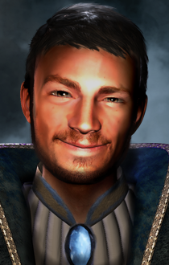
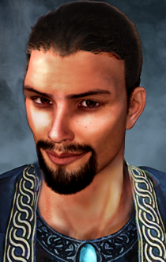
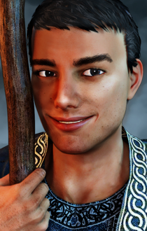

HINWEIS: Wenn Ihr eine vorherige Version der Mod installiert habt, muss diese erst vollständig entfernt werden. Dafür wird diese frühere Version vollständig deinstalliert und alle Ressourcen (Modordner, Installationsprogramm) aus dem Spielordner entfernt.
Das Spiel darf während der Installation nicht bereits laufen.
Bei Installation oder Uninstallation darf das Installationsfenster NICHT über Drücken des "X"-Knöpfchens beendet werden. Das Schließen des Installationsfensters erfolgt über das Drücken der ENTER-Taste, wenn dazu die Aufforderung erscheint.
Wenn Ihr SoD von GOG oder Steam verwendet, müsst Ihr das Spiel erst vorbereiten, bevor Ihr Mods installieren könnt. Hierfür gibt es
argent77's DLC Merger oder das ältere Tool
Modmerge.
Bei den Spielen der Enhanced Edition ist es wichtig, dass die Mod in die richtige Spiel-Sprachversion installiert wird (damit ist die Sprache gemeint, in der Ihr das Spiel spielen wollt, diese ist nicht von der Sprache, in der Ihr die Mod installieren wollt, abhängig). Ansonsten seht Ihr nicht die Modtexte im Spiel, sondern Fehlermeldungen. Die Spiel-Sprache, die gemoddet wird, ist in der Datei weidu.conf in Eurem Spielordner vermerkt. Wenn Ihr die Spiel-Sprache, die gemoddet werden soll, ändern wollt, dann deinstalliert alle Mods und löscht die Datei weidu.conf. Bei der Installation der nächsten (ersten) Mod wird die zu verwendende Spiel-Sprache dann wieder abgefragt.
Die EE-Spiele sind aktiv supportete Spiele, für die es ab und zu Patchupdates gibt. Bitte bedenkt, dass jedes Spielupdate Eure Spieldaten wieder bereinigt! Wenn Ihr gerade ein gemoddetes Spiel spielt, dann könnt Ihr nach einem Spielpatch Eure Savegames nicht mehr verwenden. Eine Möglichkeit, dies zu verhindern ist es, den gesamten Spieleordner vor dem Modden in ein anderes Verzeichnis zu kopieren. Dieses Spiel kann dann unabhängig gemoddet und über die BGMain.exe direkt gestartet werden.
Entpackt den Ordner "c#brandock" und die "setup-c#brandock.exe" in Euer Spielverzeichnis (BG:EE/SOD/BG2/BGT/BGII:EE/EET, enthält die CHITIN.KEY Datei). Bei erfolgreichem Entpacken solltet Ihr einen Ordner "c#brandock" und eine ausführbare Datei "setup-c#brandock.exe" in Eurem Spielordner vorfinden. Lasst die "setup-c#brandock.exe" über Doppelklick laufen. Wählt Eure Sprache und bestätigt die Installation. Es sollten nun alle benötigten Dateien kopiert und die Installation durchgeführt werden. Das Installationsfenster durch das Drücken der ENTER-Taste schließen, wenn die Aufforderung dazu erscheint.
Über erneutes Laufenlassen der setup-c#brandock.exe in Eurem Spielordner kann die Mod auch deinstalliert oder die Portraitauswahl verändert werden.
Entpackt den Inhalt des Modpakets und kopiert den Inhalt in Euer Spieleordner (BG:EE/SOD/BG2/BGT/BGII:EE/EET, enthält die CHITIN.KEY Datei). Korrekt extrahiert, sollten sich in Eurem Spiel-Hauptverzeichnis ein Ordner "c#brandock" und die Dateien setup-c#brandock und setup-c#brandock.command befinden. Zum Installieren einfach die setup-c#brandock.command doppelklicken und den Instruktionen folgen. Das Installationsfenster durch das Drücken der ENTER-Taste schließen, wenn die Aufforderung dazu erscheint.
Über erneutes Laufenlassen der setup-c#brandock.command in Eurem Spielordner kann die Mod auch deinstalliert oder die Portraitauswahl verändert werden.
Entpackt den Inhalt des Modpakets und kopiert den Inhalt in Euer Spieleordner (BG:EE/SOD/BG2/BGT/BGII:EE/EET, enthält die CHITIN.KEY Datei). Ladet die neueste Version von WeiDU für Linux von https://github.com/WeiDUorg/weidu/releases und kopiert WeiDU und WeInstall nach /usr/bin. Öffnet nun ein Terminal, cd zu Eurem BG Installationsordner, und lasst 'tolower' laufen, mit der Antwort Y auf beide Nachfragen. Die zweite Option (linux.ini) könnt Ihr auslassen, wenn Ihr dies bereits einmal in Eurem Verzeichnis ausgeführt habt. Falls Ihr Euch nicht sicher seid, ist das Ausführen von tolower mit beiden Optionen der sichere Weg.
Lasst WeInstall c#brandock in Eurem Spielordner laufen, um die Modifikation zu installieren. Führt wine BGMain.exe aus, um das Spiel zu starten.
Brandock der Magier wurde mit WeiDU und mit dem Anspruch größtmöglicher Kompatibilität mit anderen Mods erstellt.
Die Mod ist mit Imoen 4 Ever kompatibel.
Die Mod ist mit Endless BG1 kompatibel.
Da es sich um eine NPC Mod handelt, sollte sie nach Questmods und vor Tweakmods installiert werden. Die Mod enthält Crossmod-Inhalte, für die die vorgeschlagene Installationsreihenfolge eingehalten werden sollte.
Für die Crossmod-Inhalte wird folgende Modreihenfolge empfohlen (Achtung, die aufgelisteten Mods stehen nicht unbedingt in der empfohlenenen Installationsreihenfolge):
Brandock Mod installieren NACH den folgenden Mods: BGQE, The Calling, BG1NPC, Brages Redemption, Gavin BG1, Alternativen, NPC Strongholds
Brandock Mod installieren BEVOR den folgenden Mods: Grey der Hund.
Hinweis: Bisher enthält die Mod offiziell nur Inhalte für BG1. Brandock sollte aber auch in SoD voll funktionsfähig sein und auf die meisten Spielereignisse reagieren, allerdings nur auf Englisch. Ebenfalls nur auf Englisch sind die bisherigen BGII.Inhalte: Brandock kann aufgenommen werden, hat einen Epilog und reagiert auf den Sphärenquest und die Magierstronghold.
Brandock ist ein Magier NPC für Baldur's Gate. In BG1 kann Brandock im Norden der Küstenstraße getroffen werden, wo er nach Hilfe sucht, um einen Oger zu bekämpfen, der vor einer Höhle kampiert, in der sich Brandocks verlorene Besitztümer befinden. Wenn er in der Gruppe ist, wenn Melicamp das Huhn zurück zu Thalantyr gebracht wird, kann es zu einem Zwischenfall kommen, der Brandock aus der Gruppe entfernt, bis Melicamp zurückverwandelt wurde.
Brandock interessiert sich für das Wissen in magischen Büchern und erhält einen Bonus auf Sagenkunde, wenn er sie studieren darf. Er ist freundlich und hilfreich, aber bis er sich öffnet und erzählt, wo er herkommt und warum er an der Schwertküste unterwegs ist dauert ein bisschen, aus Gründen, die er dann mehr als bereitwillig erklärt.
Die Mod besteht aus einer Hauptkomponente und einer optionalen Komponente mit einer Auswahl von 3 alternativen Portraits für Brandock. Die Portraits sind weiter unten abgebildet.
Brandock in BG1 wartet im Norden der Küstenstraße. Er braucht Hilfe, um einen Oger zu bekämpfen, der vor einer Höhle kampiert. In der Höhle vermutet Brandock seine Besitztümer, die ihm in der Nacht zuvor gestohlen wurden. Der Oger ist derselbe, der auch Unsheys Gürtel hat und kann auch ohne Brandock in der Gruppe getötet werden. Brandock wird dies aber erst honorieren, wenn er sich selbst in der Gruppe befindet.
In SoD wartet Brandock vor dem Herzogspalast in der Menschenmenge.
In BGII kann er in einem kleinen Haus gefunden werden, dass sich im Nordwesten gleich neben der Sphäre befindet.
Brandock hat Freundschaftsdialoge, eigene Quests, Banter mit einigen NPCs und Spieler-initiierte Dialoge (PID). Die PID bieten eine Möglichkeit, Brandock über viele Dinge auszufragen, die sich auf Spielevents beziehen oder vorher in Dialogen angesprochen wurden. Beim Reisen mit Brandock erfährt der HC, warum sich Brandock an der Schwertküste befindet und wo er herkommt - beide Orte sind eng mit der Geschichte von Baldurs Tor 1+2 verknüpft, sollen aber hier nicht gespoilert werden. Brandock redet viel. Mehrere Themen der Spielstory und seiner Quests werden ihn mental sehr beschäftigen und darüber wird er entsprechend das Gespräch mit dem HC suchen.
Brandock ist sehr an magischem Wissen in Form von Büchern interessiert. In jeder Bibliothek und Büchersammlung, die man im Spiel so findet, wird er darum bitten, sich diese ansehen zu dürfen. Wird ihm dies vom HC erluabt, dann erhält er einen Bonus auf Sagenkunde.
Wenn man Brandock in BG1 trifft, ist er ein Magier der Stufe 2 mit den Zaubern "Rüstung", "Brennende Hände", "Person Bezaubern", "Schutz vor Versteinerung", "Identifizieren", "Magisches Geschoss", "Chromatische Kugel", "Furcht Bannen", "Spiegelbild" und "Schlaf" im Zauberbuch.
Bei einem neuen SoD- oder BGII-Spiel erhält er entsprechend mehr Erfahrungspunkte und hat mehr Zauber im Zauberbuch. Auch seine Ausrüstung (Mantel, Kampfstab, Schleuder) ist beim Starten in SoD oder BGII entsprechend mächtiger.
Sollte der HC mehr XP haben als Brandock, dann werden Brandocks Erfahrungspunkte beim Beitreten zur Gruppe hochgelevelt. Aufgrund der 7. Gruppenmitglieds-Möglichkeit erfolgt dies jedes mal, wenn Brandock der Gruppe beitritt.
Brandocks Gesinnung ist Chaotisch Gut.
Er hat folgende Eigenschaften:
- STR: 15
- DEX: 13
- CON: 13
- INT: 18
- WIS: 12
- CHA: 13
Aus storytechnischen Gründen startet Brandock mit einem erhöhten Basiswert an Sagenkunde von 10.
In der deutschen Version wurde für Brandock das Soundset von Reader of the Runes gesprochen.
Brandocks Portraits wurden von Acifer angefertigt. Es gibt vier Portraits, aus denen in der zweiten, optionalen Komponente gewählt werden kann, wobei das Standardportrait in der Hauptkomponente bereits enthalten ist:



Unsicher (Standardportrait) ----- Freundlich (Alternative 1) ----- Verwegen (Alternative 2) ----- Jugendlich (Alternative 3)
Brandocks Besitztümer zu finden startet einen Dialogzyklus, nach dem sein persönlicher Quest beginnt. Seine Besitztümer so früh wie möglich mit ihm zu holen stellt sicher, dass dies abgeschlossen ist, bevor die Gruppe von Herzog Eltan nach Kerzenburg geschickt wird. Es ist für die Mod nicht nötig, aber so seht Ihr den meisten Inhalt.
Auch taut Brandock nach dem Finden seiner Sachen merklich auf, weil der HC hierdurch seine Pläne für seinen Aufenthalt an der Schwertküste erfährt, was viel Gesprächsstoff bietet.
Wenn man Melicamp das Hühnchen mit Brandock in der Gruppe zu Thalantyr gebracht wird, möchte Brandock ihm helfen. Der HC kann dies verbieten. Lässt er Brandock gewähren, dann wird Brandock aus der Gruppe entfernt, bis Melicamp von Thalantyr zurückverwandelt wurde. Dieses Event ist zum Spielen der Mod nicht nötig, aber für Brandocks persönliche Entwicklung interessant.
Wenn Ihr einen Gruppenslot für einen anderen NPC benötigt, dann kann Brandock auch als sogenanntes "7. Gruppenmitglied" folgen. Hierfür muss er normal aus der Gruppe geworfen werden. Wenn er dann fragt, was Ihr von ihm wollt, dann sagt ihm, dass er weiter hinten folgen soll. Vom Scripting her erhält er dann einen ähnlichenn Status wie ein Familiar, das heißt er folgt dem HC bei Gebietswechseln überall hin, leider auch in Traumsequenzen oder andere Cutscenes. Als 7. Gruppenmitglied kann Brandock Befehle gegeben werden und es kann auf seine Quickslots und Zauber zugegriffen werden. Er muss normal in die Gruppe aufgenommen werden, um hochzuleveln oder um seine Items und Zauberslotbelegungen zu managen. Alle seine Dialoge, Banter und Einmischdialoge werden normal getriggert.
Um ihn wieder normal in die Gruppe aufzunehmen, sprecht ihn an und wählt in den PID-Optionen, dass Ihr Zugang zu seinem Inventar braucht. Dann wird Brandock der Gruppe wieder als normales Mitglied beitreten. Wenn dies durch Drücken der Pausetaste entsprechend zeitlich optimiert wird, dann kann das Management seines Inventars und sein Aufsteigen so erledigt werden, dass ein anderer NPC dafür nicht permanent aus der Gruppe entlassen werden muss, sondern dieser wieder in die Gruppe aufgenommen werden kann, wenn er seinen "Kickout"-Dialog startet.
Während Brandock als 7. Gruppenmitglied folgt, kann er nicht sterben, sondern verbleibt bei 1LP. Fallen seine LP in einem Kampf auf 1 LP dann fällt er in Ohnmacht und wird "neutral" (blauer Kreis), so dass Feinde ihn nicht weiter als Angriffsziel wahrnehmen. Ihn in diesem Zustand zu heilen ändert nichts daran, dass er außer Gefecht gesetzt ist. Erst nach dem Kampf steht Brandock wieder auf. Aus technischen Gründen wird er vollständig geheilt, bevor er wieder in den 7. Gruppenmitglieds-Modus wechselt. Dies hat mit der Spielengine zu tun und wie sie die LP der Gruppenmitglieder berechnet (Brandock könnte sonst unter Umständen an diesem Punkt sterben, wenn die HP zu niedrig sind, obwohl er eigentlich nicht tot war).
Das Ohnächtigwerden im Kampf kann verhindert werden, indem Brandock rechtzeitig geheilt wird. Über PID kann ihm gesagt werden, dass er warnen soll, bevor er diesen Punkt erreicht, dann wird das Spiel pausiert wenn Brandock droht, zu wenig LP zu haben. Dies scheint in BGT aber nicht zu funktionieren.
HINWEIS FÜR SPIELER:
Leider benötigt der "7. Gruppenmitglieds-Modus" im Spiel ein besonderes Handling, um alle Einschränkungen zu berücksichtigen:
(Die Hinweise sind eine Mischung aus den vorhandenen Enginerestriktionen und den von mir verwendeten Workarounds.)
-Der NPC hat im 7.GM keinen "Clear Fog of War" um sich herum. Er kann also im "schwarzen" Bereich der Karte "verschwinden". (Wenn man die gesamte Gruppe anklickt und zu einer Stelle laufen lässt, wird er es ebenfalls versuchen, sofern er nicht irgendwo feststeckt o.ä. Dann hilft nur noch der Teleportationscheat "Strg+j" um die Gruppe wieder zu versammeln. Mir ist das so noch nicht geschehen, es ist aber theoretisch möglich, wenn der NPC z.B. einen Feind verfolgt.)
-Items im Inventar werden *nicht* als Items im Besitz der Gruppe erkannt. Dies ist ein Engineproblem. Daraus folgt, dass Questitems die im Spiel benötigt werden, nicht im Inventar des NPCs sein sollten, wenn sie vom Questgeber erkannt werden sollen. Beispiele: Elvenhaars Buch, Ankhegpanzer für Taerom etc.
-Als "critical" getaggte Quest-Items werden beim Wechsel in den 7. GMM in das Inventar des HC verschoben. Dadurch landen eventuell Gegenstände aus dem Inventar des HC auf dem Boden. Dies ist ein Engineproblem. Daraus ergibt sich, dass Ihr immer nach Wechsel des NPC in de 7.GMM nachschauen solltet, ob Items auf dem Boden gelandet sind!
-Wenn bei einem meiner Quests speziell für diesen NPC neue Items übergeben werden, erscheinen diese immer im Inventar der Gruppe bzw. HC, auch wenn sie eigentlich der NPC erhalten soll. Dies ist ein Engineproblem. Auch wenn ich es so gescriptet haben sollte, dass die Gegenstände schlussendlich im Inventar des NPCs sind, werden sie trotzdem über das Inventar des HC gehändelt. Wie sonst auch im Spiel können auch hierbei Gegenstände aus dem Inventar auf dem Boden gelandet sein.
-Für meine NPCs habe ich versucht, bei den eigenen Questitems (auch wenn es sich um Originalitems des Spiels handelt, sofern sie für den Quest meines NPCs nötig sind) diese auch im Inventar des NPC erkennen zu lassen. Das klappt mit folgenden Einschränkungen:
-- Alle Items, um die es geht, werden über das Inventar das HC gehändelt bevor sie entweder einem Questgeber gegeben oder von diesem erhalten wurden. Das bedeutet, dass andere Items auf dem Boden gelandet sein könnten.
-- Befand sich das weggebene Item in einem Nimmervollen Beutel (dazu zähle ich auch Edelsteinbeutel, Taschen für Flaschen etcpp.), dann wird das Item nicht entfernt. Es ist danach noch immer im Nimmervollen Beutel und kann Probleme bereiten, wenn der Quest nicht stabil gescriptet wurde (und davon ausgeht, dass das Item weg sein sollte).
-- 2. Problem mit Items im Nimmevollen Beutel: Befand sich das weggebene Item in einem Nimmervollen Beutel, dann stürt aus unerfindlichen Gründen das Spiel ab, wenn der NPC danach wieder über die PID-Option als vollwertiges Mitglied in die Gruppe aufgenommen werden soll. Dieser "Absturzbug" lässt sich umgehen, indem das Spiel gespeichert und wieder geladen wird.
HINWEISE FÜR MODDER / DAS SKRIPTEN DES 7.GMM:
-Damit der NPC im 7. GM nicht stirbt aber auch nicht als unsterblicher Tank zur Verfügung steht verwende ich eine Kombination an Effekten und Skriptbefehlen falls die HP zu niedrig werden. Fragen dazu beantworte ich gerne.
-Wenn der NPC niedrige Lebenspunkte hat kann er sterben, wenn er wieder in die Gruppe aufgenommen wird. Ich verhindere das, indem er nach jedem Kampf wieder voll geheilt wird.
-Das enginebedingte Aufrufen der Banter im B.dlg beinhaltet keine Familiars, d.h. die Banter (bzw. Inhalte des B.dlg) müssen über Skript des NPCs "per Hand" getriggert werden.
-Die Rastdialog d.bcs wird ebenfalls nicht aufgerufen. Rastdialoge müssen zusätzlich in die des Player1d.bcs eingefügt werden, damit sie getriggert werden können, wenn der NPC im 7. GMM ist.
-Das Händeln der Dialoge muss von Hand erfolgen, also beim Verlassen der Gruppe zum Wechsel in den 7. GMM muss der Dialog des NPC auf den Joined J.dlg gesetzt werden, damit er an Dialogen etc. teilnehmen kann.
-Eine einfache Abfrage ob der NPC in der Gruppe ist (InParty("npcname")) reicht nicht aus, weil diese Abfrage für Familiars nicht gültig ist. Das gilt auch for das in der EE verlässlich funktionierende IfValidForPartyDialog().
-GiveItemCreate erzeugt das Item im Inventar des Player1 und des 7.GM, wenn der 7.GM als Empfänger angegeben wurde. Neue Items müssen also immer direkt (und nur) ins Inventar des Player1 gegeben werden.
-GiveItem vom 7. GM zu einem Questcharakter wird nicht ausgeführt. Der 7.GM muss also Items erst per Skriptbefehl ins Inventar des Player1 geben, von dort aus können Questcharaktere sie nehmen.
-Das Handling von Items über das Inventar des Player1 ist insofern auch vorteilhaft, als dass man nur aus dem Inventar der Gruppenmitglieder eine bestimmte Anzahl entfernen kann (TakePartyItemNum). Der 7.GM kann nur den ganzen Stack weiterreichen.
Nochmal in Kürze die wichtigsten Tips beim Spielen im 7. GMM zusammengefast:
-In manchen Cutscenes und Traumsequenzen wird Brandock als 7. Gruppenmitglied ebenfalls dabei sein. Ich habe vor, das in einer späteren Version für die mir bekannten Cutscenes zu beheben.
-Brandock hat keinen sogenannten "Clear Fog of War"-Effekt, wenn er als 7. Gruppenmitglied mitläuft. Das heißt, dass das Gebiet, in dem er sich befindet, nicht gesehen werden kann und Brandock so im dunklen Bereich "verloren gehen" kann. Durch ein Zusammenrufen der Gruppe sollte er wieder im sichtbaren Bereich auftauchen, falls dies geschieht. (Der Grund hierfür ist, dass die Engine nicht mehr als 8 Kreaturen pro Gebiet mit dieser Eigenschaft händeln kann - darin inbegriffen sind die 6 Gruppenmitglieder und eventuelle Cutscene-Spione!)
-Nach jedem Questereignis und nach dem Wechsel in den 7.GMM nochmal schauen, ob der HC Items aus dem Inventar verloren hat, die wieder vom Boden aufgelesen werden sollten.
-Es ist nötig und auch zu empfehlen, nicht-kritische Questitems nicht im Inventar der 7. GM sondern in dem der normalen Gruppenmitglieder zu haben.
-Gegenstände im Inventar des 7. GM werden nicht erkannt, das heißt Questgeber reagieren, als hätte die Gruppe den Gegenstand nicht dabei. Für meine eigenen NPCs habe ich die modeigenen Questgegenstände zwar größtenteils über Skript auch in diesem Fall im Inventar des NPC erkennen lassen, aber auch das funktioniert nicht problemlos.
-Questitems aus Beuteln/Nimmervollen Taschen im Inventar des 7. GM nehmen, bevor man die entsprechenden Questgeber anspricht, um den "Absturzbug" zu verindern.
-Speichern, bevor ein 7. GM wieder in die Gruppe aufgenommen werden soll. Sollte das Spiel dann abstürzen, den Spielstand neu laden. Damit sollte der Absturz nicht auftreten.
This mod is unofficial Fan Content permitted under the Fan Content Policy. Not approved/endorsed by Wizards. Portions of the materials used are property of Wizards of the Coast. ©Wizards of the Coast LLC.
This mod is also not developed, supported, or endorsed by BioWare, Black Isle Studios, Interplay Entertainment Corp., Overhaul Games or Beamdog. All other trademarks and copyrights are property of their respective owners.
Version Beta 13:
- More interjections in Korlasz Tomb.
- Minor internal restructuring with regard to how Korlasz Tomb is handled.
- Improved compatibility and crossmod with EndlessBG1 and Transitions mod.
Version Beta 12:
- Brandock will say a goodbye line upon original transition to SoD (interjection into Imoens dialogue)).
- Added crossmod with EndlessBG1 (Brandock will say a goodbye line upon leaving).
- Fixed crossmod with Transitions (update to Transitions v1.1 plus fix: Brandock will not say the BGII goodbye line upon SoD transition).
- Updated crossmod with Framed: Brandock will now also talk about going to Candlekeep if he saw the monastery before receiving the work order.
- Added short "space timer" so Brandock doesn't fire several dialogues in a row in case he joins the group late(r).
- Changed Brandock's level-up system: He will only level up to the PC's level if: he joins the first time for BG1/SoD/BGII OR he joins after being a 7th party member. No more automatic level-up although he is in party or was separated for a while.
Version Beta 11:
- German version (BG1) completed.
- BG1 content completed. Only thing missing is more crossmod.
- Crossmod is now separate component.
- "Brandock scribes his first scroll" quest fixed.
- "Brandock Restores his Book" quest revised.
- Added more instances to "Lore Path".
- Fixed BG1 "go to Beregost" kickout option.
- Fixed comment on flooded mines: should not be doubled if Breagar is in party.
- Corrected "BrandockSpawn" variable in SoD.
- Typo corrections.
- Brandock should only comment on Jardak and/or Drelik's deaths if they indeed died.
- Brandock should only comment on Delorna + Ithmeera + Helshara being dead if they indeed died.
- Dialogue about schlumsha the sewer slime king should trigger correctly.
- Added one more line to Brandock's dialogue after shape shifting in Candlekeep.
- Brandock's book case should not vanish in Irenicus' Dungeon.
- Cutscene at Thalantyr's shortened.
- The area for Cutscene at Thalantyr's should be empty afterwards.
- Brandock should not read Sunin's spell book twice / find a spell book with Joular.
- Crossmod interjection to bg1ub's "Mysterious vial" quest should be at the right state of Thalantyr's dialogue.
- Crossmod with BG1NPC (Imoen's tome) should not stutter.
- Crossmod with BST: finding spellbook of dead mage should lead to lore increase.
- Crossmod with Breagar should not skip 1,5 banter.
- Reworked Brandock's reaction to Cadlekeep to make it better compatible with Framed Mod.
- Added some Crossmod with Framed Mod.
- Brandock's book case now takes Miscellaneous items, too, to allow for quest books.
- Wrong "Slow Poison" spell removed from Brandock's spell book for new SoD or BGII game.
- Added missing InParty checks to trigger script blocks.
- Updated credits section.
- Changed instances of "OSX" to "macOS".
- Added globally unique LABELs to support Project Infinity.
- Added more notes about playing in 7th party member mode to readme.
Version Beta 10:
- Fixed stutter for book restore quest.
- Edited c#brandock.ini to shorten mod package name.
- Corrected "ring" to "spellbook" in SoA meting dialogue.
- Thalantyr should say his line in crossmod with A. Questpack "Of Wolves and Men".
- Added !See([ENEMY]) to lorepath script blocks.
Version Beta 9:
- Fixed stutter for journal entry after first lore increase.
Version Beta 8:
- Fixed crossmod install errors for BG1NPC and ntotsc crossmod..
Version Beta 7:
- Dialogue about being infected with lycantrophy should not stutter.
- Dialogue about inside Durlag's Tower should not loop.
- 3 more banters with Xan added (BG1).
- more interjections added (BG1).
- Imoen's DV should be applied correctly in BG1NPC crossmod script.
- More Imoen BG1NPC crossmod.
- 7th party member mode should be removed correctly if Brandock changes from it to full member (or is kicked out instead).
- SoD: interjection into Ammon's dialogue should be to the right state.
- SoD: Brandock should not die instead of Ophyllis.
- SoD: added more randomness to when Brandock is chosen in Thrix' game.
- uses same area for Thalantyr's private quarters like bg1re and SotSC, from Lava.
- crossmod added: more crossmod banters with Brage NPC; more banter with Breagar; bg1re (Necromancer's Trouble, Dinner with Thalantyr); Ascalon's Questpack (The Great Karlini, From Wolves and Men); Balduran's Seatower; Solaufein's Rescue; Imoen4Ever; Lure Of Sirine's Call; Shades of the Sword Coast; SoA; Transitions).
- Structure of folders changed: mod uses "autotra" folder for text conversion so the original files stay unchanged.
- Quests finished: "lorepath", "half-ogre shapeshifting" (BG1+SoD), "scroll scribing".
- SoD: new optional component changes SoD banter to "Dialogue style".
- BGII: changed Ebrel's ring to his spell book. Added possibility to arrange for his funeral in the Temple of Helm.
Version Beta 6:
- journal entry for Brandock's restore book path should work as intended.
- book restore path: Brandock should not think that all ingredients are present if they are not.
- mapnote to Elvenhair only for BGT (EE adds an own one)
- dialog after death of Mutamin should not lead to stutter
- Brandock should not start banter before switching into 7th party member mode is done.
- Brandock should not start dialogue about Brage if Brandock-Brage banter happened.
- Thalantyr should start dialogue to help Brandock after Melicamp is restored.
- fix stutter bug in BGII
- proof readings by Caedwyr integrated.
- Slow Poison corrected to necromancy spell instead of innate.
- Thalantyr should start spell to help Brandock after the half-ogre incident also if Brandock was 7th party member when it happened.
Version Beta 5:
- BG1NPC crossmod (IMoen's tome) should install correctly.
Version Beta 4:
- (German version) Note about Brandock's Lore increase should not be in English.
- (English version) Integrated proof readings by Brokenkatana.
- Crossmod with Valerie mod added. Not approved yet by Tempest. Will be changed or removed if requested.
- (Crossmod compatibility) Brandock should not complain that no one cares about the attack in Beregost inn if Moidre from Glam's pack is near.
- crossmod with bg1npc (Imoen's tome) should be installed.
- Brandock should not refer to Bentha being killed if she survived (Nashkel Carnival).
- Revised Brandock's reactions if his book is not in inventory.
- Brandock's book(s) and bookcase are no longer tagged as critical items (Brandock's books should not always land in HC's inventory if Brandock changes into 7th member mode).
- C#5MINHP.spl should not be applied to party.
- Change into 7th party member mode and back should not be interrupted.
- Brandock's lore should be increased after reading spell components to create a Halruaan skyship.
- Brandock's lore should only increase once after the Niemain encounter.
- More interjections and lore increases added.
- Dialoge after Sarevok's death added (for BGT or if game remains in BG1 due to other mod).
- More crossmod added: Gavin BG1, Breagar BG1
Version Beta 3:
- Thalantyr should not try to initiate Brandock's Quest after Melicamp is rescued if Brandock-Melicamp interaction did not happen beforehand.
Version Beta 2:
-install will not fail if Alternatives in installed
-Brandock will not comment on Tranzig before he was met in Chapter 3
Version Beta 1:
- Erste Veröffentlichung mit BG1-Inhalten.